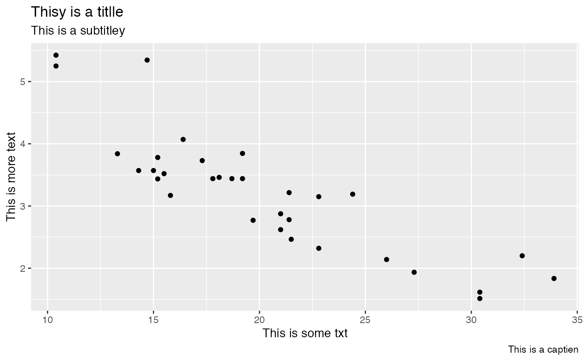

Due to the way ggplot2 objects are created, this has to be used in a standalone context.
gg_check(gg, dict, ignore)ggplot2 object
a dictionary object or string which can be passed to hunspell::dictionary.
Defaults to hunspell::dictionary("en_US")
character vector with additional approved words added to the dictionary.
Defaults to hunspell::en_stats
the object that was passed in
Current functionality only looks for misspelled words in the labels of ggplot2 objects. When misspelled words are found, a message is printed with the words and the label that they are in. No messages will be printed if there are no misspelled words.
library(ggplot2)
df <- data.frame(x=c(20, 25, 30), y=c(4, 4, 4), txt=c("One", "Two", "Three"))
# not piping
ggplot(mtcars, aes(mpg, wt)) +
geom_point() +
labs(x="This is some txt", y="This is more text",
title="Thisy is a titlle",
subtitle="This is a subtitley",
caption="This is a captien") -> gg
gg_check(gg)
#> Possible misspelled words in [title]: (Thisy, titlle)
#> Possible misspelled words in [subtitle]: (subtitley)
#> Possible misspelled words in [caption]: (captien)
